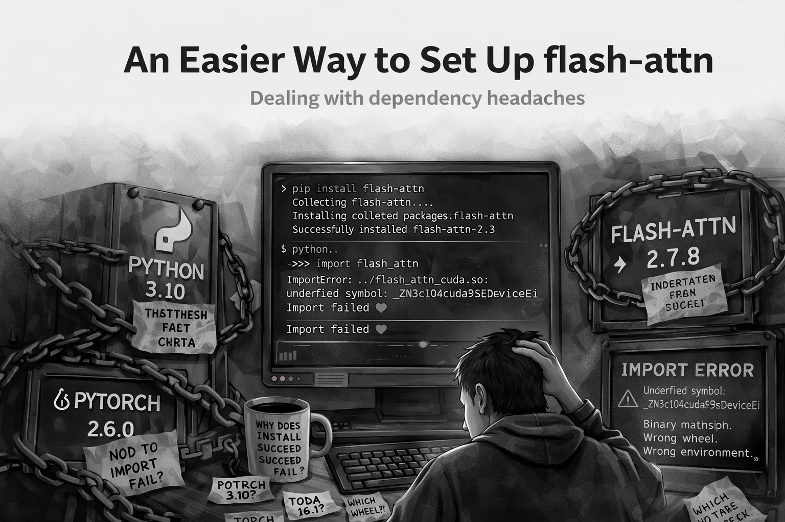

An Easier Way to Set Up flash-attn
A simpler way to avoid the “it installed, but import still fails” problem.

pip install can succeed while import flash_attn still fails.flash-attn installs successfully.
And then it does not work. You can run:
pip install flash-attnor even:
pip install flash-attn --no-build-isolationEverything completes without errors. But the moment you try:
import flash_attnyou hit undefined symbols and broken binaries.
This shows up often enough in the FlashAttention issue tracker that it has become a recognizable pattern: the install looks fine, but the import fails because the built or downloaded artifact does not actually match the PyTorch, CUDA, Python, or ABI expectations of the environment.
A few representative github issues that demonstrate this: #809, #667, #966, #919, #784.
That is because the install step does not guarantee that the installation actually matches your environment setup properly.
I kept running into this every time I set up a vLLM environment and eventually settled on a much simpler approach.
The Problem
The issue is not installing flash-attn.
It is installing the right build of flash-attn.
Your environment is defined by:
- Python version
- PyTorch version
- CUDA version
- System architecture
If any of these do not match the wheel, the install may succeed, but the import will fail.
That is why relying on:
pip install flash-attn --no-build-isolationis unreliable. It leaves too much up to pip to figure out.
A Simpler Approach
The easiest way to install flash-attn is:
Download the exact wheel that matches your environment.
No guessing. No builds. No surprises.
Step 1: Install PyTorch First
Install PyTorch before anything else.
Everything in flash-attn depends on your PyTorch and CUDA setup, so this needs to be fixed first.
Step 2: Identify Your Environment
You need four things:
- Python version
- PyTorch version
- CUDA version
- System architecture
These determine exactly which wheel will work.
Step 3: Understand the Wheel Name
A typical flash-attn wheel looks like this:
flash_attn-2.7.3+cu12torch2.6cxx11abiTRUE-cp310-cp310-linux_x86_64.whlIt looks messy, but it is structured.
| Component | Example | Meaning |
|---|---|---|
flash-attn version |
2.7.3 |
Library version |
| CUDA | cu12 |
CUDA 12 |
| PyTorch | torch2.6 |
PyTorch 2.6 |
| ABI | cxx11abiTRUE |
Compiler compatibility |
| Python | cp310 |
Python 3.10 |
| Architecture | linux_x86_64 |
OS and CPU |
Step 4: Match Your Environment
Use this template:
flash_attn-{flash_version}+cu{cuda}torch{torch_version}cxx11abi{ABI}-cp{python}-cp{python}-{arch}.whlExample
If your setup is:
- Python 3.10 →
cp310 - PyTorch 2.6 →
torch2.6 - CUDA 12 →
cu12 - Linux x86_64 →
linux_x86_64
Then you want:
flash_attn-2.7.3+cu12torch2.6cxx11abiTRUE-cp310-cp310-linux_x86_64.whlStep 5: Use a Small Helper Script
Here is a small script to print the tags for your environment:
import platform
import sys
import torch
def python_tag():
return f"cp{sys.version_info.major}{sys.version_info.minor}"
def arch_tag():
system = platform.system().lower()
machine = platform.machine().lower()
if system == "linux" and machine in ("x86_64", "amd64"):
return "linux_x86_64"
if system == "linux" and machine in ("aarch64", "arm64"):
return "linux_aarch64"
if system == "darwin" and machine == "arm64":
return "macosx_arm64"
if system == "darwin" and machine == "x86_64":
return "macosx_x86_64"
return f"{system}_{machine}"
def cuda_tag():
cuda = torch.version.cuda
if cuda is None:
return "cuXXX"
major = cuda.split(".")[0]
return f"cu{major}"
def torch_tag():
version = torch.__version__.split("+")[0]
major, minor, *_ = version.split(".")
return f"torch{major}.{minor}"
print("Python tag :", python_tag())
print("Torch tag :", torch_tag())
print("CUDA tag :", cuda_tag())
print("Arch tag :", arch_tag())Use these values to match the correct wheel manually.
Step 6: Download and Install
Go to the FlashAttention releases page:
- Pick the version.
- Open the assets.
- Match the wheel.
- Download it.
Then install:
pip install <wheel_file>References
- Issue #809 - install succeeds, then
import flash_attnfails with an undefined symbol. - Issue #667 - a Python 3.11 / PyTorch 2.1 / CUDA 12.1 environment reports an undefined symbol from the installed extension.
- Issue #966 - import of
flash_attn_2_cudafails after build. - Issue #919 - wheel and source attempts still produce undefined symbol errors in a mismatched environment.
- Issue #784 - another report of
pip install --no-build-isolationfollowed by import-time undefined symbol failure. - Issue #853 - one user reports resolving the problem by installing a specific matching wheel file manually.
- Issue #1696 - a newer example showing successful install but runtime import failure on PyTorch 2.7.0, with a source build working around the mismatch.